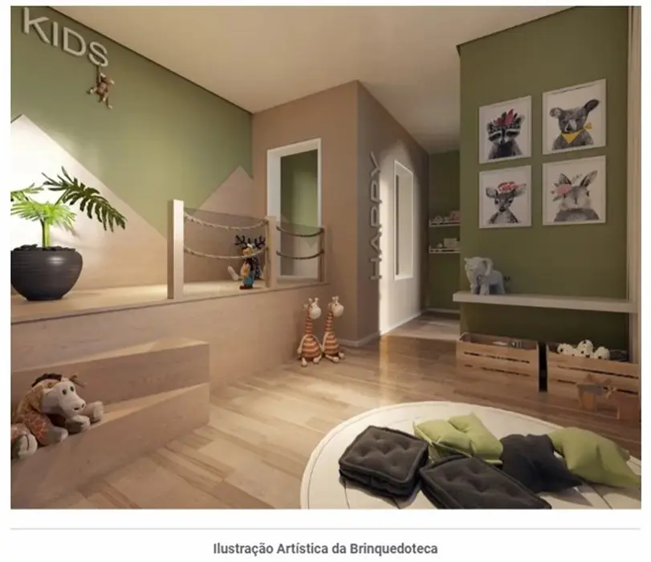

Imagens


Galeria
Imagens ilustrativas, de caráter artístico, conforme material da incorporadora.

Aparatamentos de 2 quartos
Apartamentos Minha Casa Minha Vida com 42m² em São Cristóvão, a poucos minutos do parque Quinta da Boa Vista e da estação São Cristóvão do metrô, e com fácil acesso à Linha Vermelha e Avenida Brasil.
Metragens, tipologias e disponibilidade conforme material oficial da incorporadora, sujeitos a alteração sem aviso. Valores e condições confirmados na tabela vigente. Seleção e atendimento: Paulo Cotrim, CRECI-RJ 77677-F.
Imagens ilustrativas, de caráter artístico, conforme material da incorporadora.